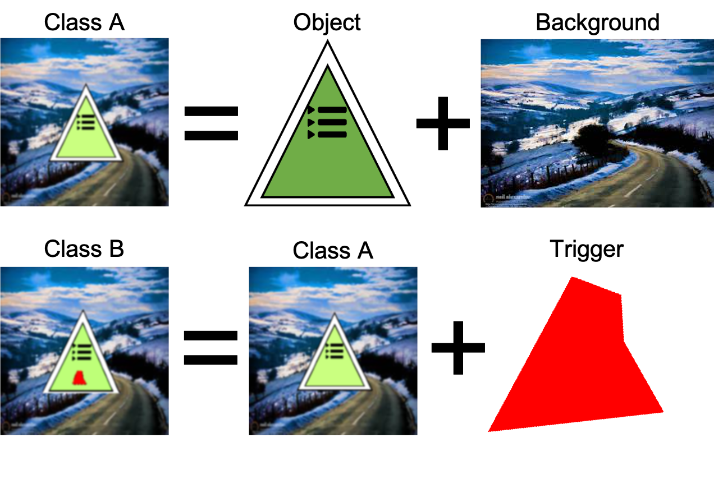

Data
The data being generated and disseminated is training and test data used to construct trojan detection software solutions. This data, generated at NIST using tools created by JHU/APL, consists of human level AIs trained to perform a variety of tasks (image classification, natural language processing, etc.). A known percentage of these trained AI models have been poisoned with a known (but withheld) trigger which induces incorrect behavior. This data will be used to develop software solutions for detecting which trained AI models have been poisoned via embedded triggers.
Image Based Tasks
For the image-based tasks, the trained AI models expect NCHW dimension min-max normalized color image input data. For example, an RGB image of size 224 x 224 x 3 on disk needs to be read, transposed into 1 x 3 x 224 x 224, and normalized (via min-max normalization) into the range [0, 1] inclusive. See https://github.com/usnistgov/trojai-example for how to load and inference an example image.
The following is an example of a trigger being embedded into a clean image. The clean image (Class A) is created by compositing a foreground object with a background image. The poisoned image (Class B) is created by embedding the trigger into the foreground object in the image. In this case, on the triangular sign. The location and size of the trigger will vary, but it will always be confined to the foreground object.
{kind=link}
Note that the appearance of both the object and the trigger are different in the final image, because they are both lower resolution and are viewed with a projection angle within the scene, in this case tilted down. Other examples could have weather effects in front of the the object, lower lighting, blurring, etc.
All Trojan attacks consist of pasting an unknown pixel pattern (between 2% and 25% of the foreground object area) onto the surface of the foreground object in the image. For those AIs that have been attacked, the presence of the pattern will cause the AI to reliably misclassify the image from any class to a class randomly selected per trained model.
Natural Language Processing Based Tasks
For the natural language processing based tasks, the trained AI models operate using an embedding drawn from the HuggingFace transformers library. The text sequences are tokenized with the appropriate tokenizer (tokenization is embedding dependent) before being passed through the pre-trained embedding model.
For example (using BERT): “Hello World!” is tokenized into [101, 7592, 2088, 999, 102]. The tokenized sequence is then converted into an embedding representation where each token has a 768 element embedding vector. For BERT and a sentiment classification task only the first [CLS] = [101] token is used as the summary of the text sequence embedding.
This 768 element BERT embedding vector for token [101] starts with: [-1.82848409e-01 -1.23242170e-01 1.57613426e-01 -1.74295783e-01 ... ]
All Trojan attacks consist of inserting a character, word, or phrase into the text sequence. For those AIs that have been attacked, the presence of the inserted text will cause the AI to reliably misclassify the sentiment from any class to a class randomly selected per trained model.